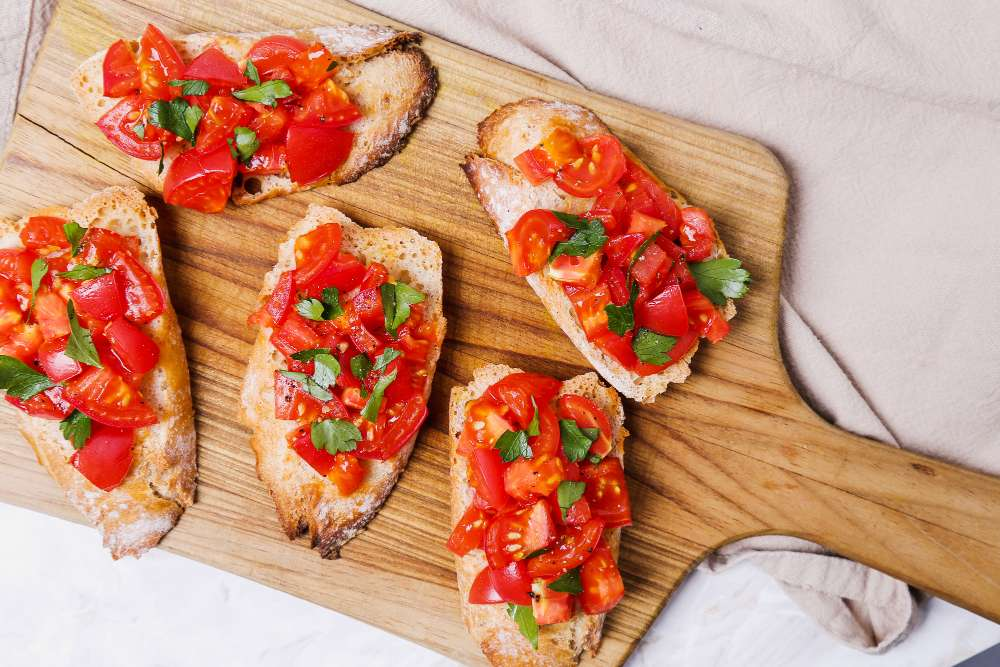

Sabores únicos para disfrutar en casa

Bruschetta es el nombre que recibe un plato originario de la cocina italiana, concretamente de parte de Italia central y meridional. Se le considera uno de los antipasti más populares y tradicionales de Italia.Las bruschettas son una clásica entrada italiana preparada con pan tostado, tomate fresco, ajo y albahaca.